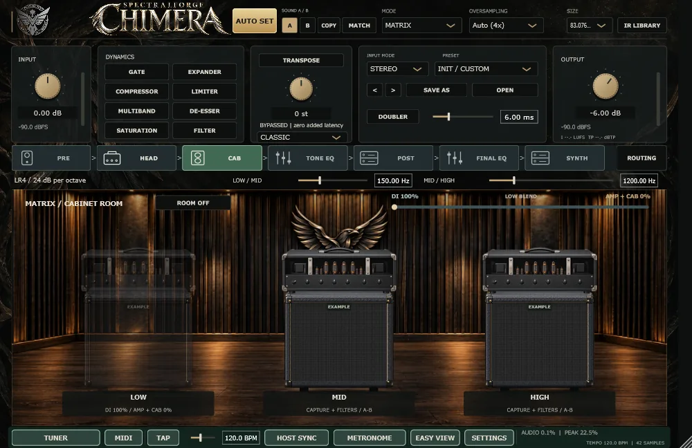
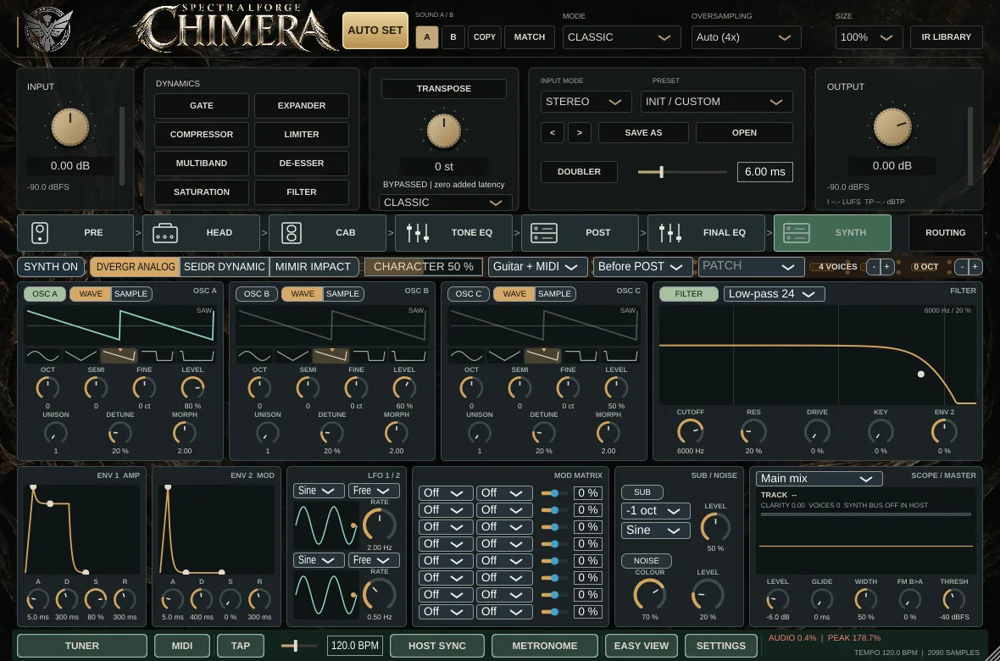

SpectralForge Chimera
Version 1.5.0-beta.1
Gitarren- und Bass-Amp-Matrix — VST3, Standalone und OBS-Filter für Windows, macOS und Linux, dazu AU unter macOS.
Download
Handbuch (EN/DE/KO) · Versionshinweise und Prüfsummen
Schließen Sie Chimera und Ihre DAW vor der Installation. Projekte, Presets und eigene IRs bleiben erhalten.
Nur der OBS-Filter
Die Installer oben enthalten den OBS-Studio-Filter bereits als optionalen Bestandteil (unter Windows im Windows-Installer). Wer nur den Filter hinzufügen möchte, installiert ihn mit diesen Paketen: OBS schließen, dann im entpackten Ordner ./install.sh ausführen. Das Chimera-VST3 muss installiert sein.
Linux benötigt OBS aus den Paketen der Distribution (Flatpak und Snap werden nicht unterstützt) und glibc 2.38 oder neuer; das Editorfenster braucht X11 (unter Wayland XWayland). Das macOS-Modul ist noch nicht notarisiert. Diese Pakete wurden mit 1.4.1-beta.1 veröffentlicht; der Code des OBS-Filters ist in 1.5.0-beta.1 derselbe. Prüfsummen
Lizenzzeitraum
Diese Beta darf bis 31.05.2027, 23:59 KST (31.05.2027, 14:59 UTC) verwendet werden. SETTINGS zeigt die verbleibende Zeit; 14 Tage vorher erscheint eine Warnung.
Bereits geöffnete Instanzen laufen nach dem Ablauf weiter. Danach geöffnete Instanzen behalten ihren Zustand, die Ausgabe ist stumm.
Ein bestätigter Beta-Tester-Code (SETTINGS → Enter beta tester code...) hebt den Ablauf auf diesem Computer unbefristet auf.
Neu in 1.5
- Zweite POST-Slots: Jede POST-Sektion hat einen unabhängigen zweiten Slot, zum Beispiel zwei Delays gleichzeitig. Alle zweiten Slots sind anfangs aus, bestehende Projekte klingen gleich.
- Ziehen auf der POST-Seite: Rack-Zeilen am Griff ziehen, um die Kette umzuordnen.
- Metro Clean ist jetzt ein zweikanaliger Bass-Amp (MODERN und CLASSIC) mit O/D SYMMETRY. Gespeicherte Projekte öffnen auf MODERN mit ihren Reglerwerten, aber die früheren Regler VOICING und HI MID entfallen und HIGH PASS sowie die Mittenfrequenz haben neue Bereiche, sodass ein Projekt mit Metro Clean anders klingen kann.
- Neue Grafiken für fünf Referenz-Tops.
- Acht weitere Auto-Set-Schritte, alle standardmäßig aus, für die Amps beider Dual-Rigs und der Matrix-Spuren MID und HIGH.
- Die neuen Funktionen sind nur automatisch getestet.
Neu in 1.4.1
- Sieben neue Auto-Set-Schritte, alle standardmäßig aus: Raumanteil (Room Core); Boxen-Cuts, Wahl der Werks-IR, Mikrofonposition sowie Mikrofonabgleich und -mischung für die Dual-Rigs und Matrix-Spuren; und das Boost-Pedal im Dual Blend. Sie sind nur mit synthetischen Signalen geprüft.
- Der OBS-Filter behält ein Preset, das eingespielt wird, während OBS den Filter speichert.
- Modelle, Parameter und gespeicherte Projekte sind gegenüber 1.4.0-beta.1 unverändert.
Neu in 1.4
- 132 wählbare Modelle: AMP 30, PRE 51, POST 39, CREATIVE 9, SYNTH 3.
- Signalreihenfolge per Drag-and-drop im PRE-Board und im ROUTING-Graphen.
- SYNTH-Seite, die dem Spiel folgt: 3 Engines, 3 Oszillatoren, Sample-Modus und Mod-Matrix.
- Room-Raumstufe, Sechsband-Dynamik und Studio-True-Peak-Limiter mit LUFS-Anzeige.
- Graphical-EQ-Gruppenbearbeitung, Band-SOLO und A/B je EQ.
- Neue Auto-Set-Phasen: Spurpolarität, Delay-Sync, Werks-IR-Auswahl und Instrumenterkennung.
- Easy View, A/B MATCH und der OBS-Filter auf allen drei Plattformen.
Screenshots




Aufgenommen aus dem 1.4.0-beta.1-Quellstand (Linux, 100 %).
Bekannte Einschränkungen
- Dies ist eine Beta, keine stabile Version. Automatische Builds und Tests bestehen auf Windows, macOS und Linux; 107 strenge Prüfungen sind nicht ausgeführt und offengelegt.
- Echtes Gitarren-/Bass-DI-Probehören und die Abnahme in echten DAWs/Audiogeräten stehen noch aus.
- Die Installer sind noch nicht öffentlich signiert bzw. notarisiert. AAX ist nicht enthalten.
- Bestehende Projekte behalten ihren Klang, außer Projekten mit Metro Clean (siehe Neu in 1.5). Neue Parameter werden angehängt und starten ausgeschaltet.